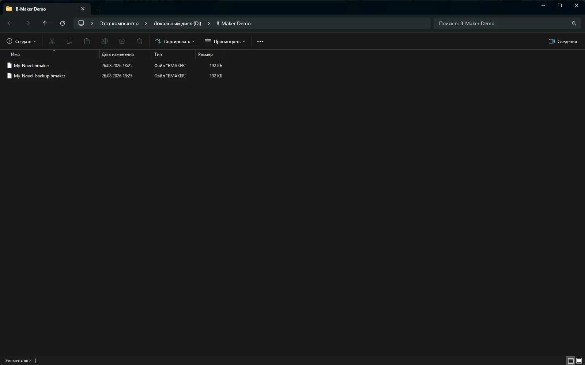

Проект B-Maker — это переносимый SQLite-файл .bmaker, в котором живёт авторская работа. Вы сами решаете, где хранится этот файл и как делать его резервные копии.
На вопрос «где моя книга?» должен быть простой ответ
У обычного документа всё понятно: вот файл. Современные приложения часто заменяют эту простую модель аккаунтами, рабочими пространствами, состояниями синхронизации, собственными хранилищами и процедурами экспорта.
У таких систем есть преимущества, особенно для совместной работы. Но для одиночного авторского проекта появляется и зависимость: приложение становится не только инструментом редактирования, но и местом, которому принадлежит каноническая копия.
В B-Maker модель проще: сам проект остаётся файлом.

Один файл может содержать сложный проект
«Файл» не означает «один плоский документ». Внутри .bmaker могут находиться книги, статьи, разделы, версии, данные планирования, комментарии, обложка и материалы проекта. Внутри это SQLite-проект, снаружи — один переносимый объект, который легко узнать и переместить.
Это важное различие: сложность остаётся внутри проекта и не превращается в папку из сотен технических файлов, которые автор обязан понимать.
Резервные копии остаются понятными
Стратегия backup не должна требовать знания серверной архитектуры приложения. Скопируйте проект на другой диск. Добавьте его в свою обычную систему резервирования. Храните датированные снимки. В B-Maker также есть история, восстановление и проверка целостности проекта, но базовая модель владения остаётся видимой.
Если вам удобен облачный диск для резервной копии или переноса — это по-прежнему ваш выбор. Local-first не означает anti-cloud. Это означает, что облако — дополнительная инфраструктура, а не обязательный дом рукописи.

Браузер не обязан менять модель владения
B-Maker можно использовать в современном браузере на Mac, Linux, Chromebook и планшетах. Обычно web-интерфейс подразумевает, что проект автоматически становится объектом веб-сервиса. Здесь это не обязательно: браузерный проект можно скачать как переносимый файл .bmaker.
Нативная Windows-версия работает непосредственно с локальными файлами проекта. Web-версия расширяет список устройств, не превращая саму рукопись в удалённый аккаунт.
Компромисс есть, и он осознанный
Обязательное облако упрощает автоматическую синхронизацию между устройствами и совместное редактирование в реальном времени. B-Maker сейчас ставит выше владение файлом и переносимость. Если главным требованием является бесшовная live-collaboration, cloud-native инструмент может подойти лучше.
Если важнее понятная каноническая копия, независимые резервные копии, владение офлайн и возможность уйти вместе со всем проектом, local-first модель проще.
Владение — тоже часть workflow
Это не только аргумент про приватность. Меняется ежедневная работа. Понятно, что резервировать. Понятно, что скопировать перед рискованной правкой. Понятно, что относится к проекту. И ответ на вопрос «где моя книга?» остаётся конкретным.
Связанные материалы
Local-first программа для письма · Кроссплатформенная работа · Сначала пишите
Храните проект там, где хотите.
Работайте в B-Maker в браузере или Windows и сохраняйте переносимый файл проекта под своим контролем.